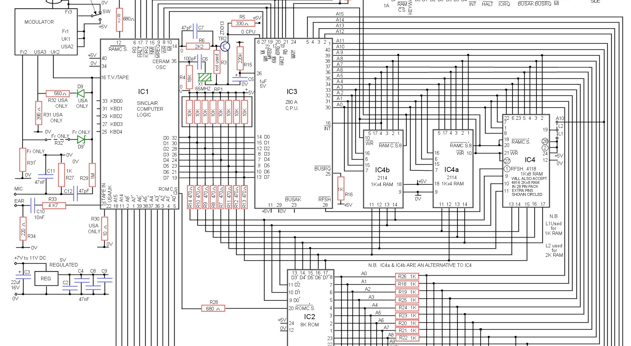
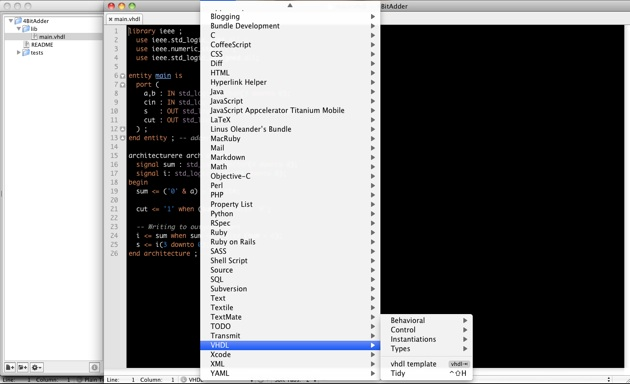

VHDL under OS X för Chalmerister

Börja med att starta upp terminalen, den återfinns under Program -> Verktygsprogram.
Kör följande kommando, byt ut oleander mot ditt eget chalmers id.


Att installera en kompilator tillsammans med en simulator för VHDL under OS X har inte varit det enklaste. Försökte själv i början av kursen men gav snabbt upp för att leta efter alternativa lösningar.
Om vi nöjer oss med en lite långsammare lösning än en lokal simulator och kompilator så fungerar det utmärkt att köra applikationerna direkt från Chalmers serverar.
Hur man går tillväga för att åstadkomma något sådant går jag igenom här.

QuestaSim startar nu upp enligt bilden.
Du kan i princip starta upp vilka applikationer som helst, testa te.x med firefox eller matlab.
För att fortsätta använda konsolen efter applikationen är startad så kan du avsluta vsim med ett &-tecken, vsim &.
Observera att applikationen stänger ner om du stänger terminalen eller tappar internetuppkopplingen.

Det går tyvärr inte att byta ut QuestaSim när det kommer till simuleringen och kompileringen. De du kan göra är däremot att jobba med en din egna editor, när du väl ska testa koden så kan du falla tillbaka till QuestaSim.
Nedan kommer en liten tutorial hur du får Textmate att fungera med VHDL och QuestaSim.

Klicka på plus-knappen och välj SSHFS, detta bör resultera i följande fönster.


Fyll i följande.
Mount Point: Absoluta länkvägen till Chalmers-mappen som du skapade längre upp. Du kan antingen dra mappen du nyss skapade direkt in i fältet, eller så kan du ange /Users/användarnamn/Chalmers direkt.
Volume Name: Namnet på volymen som ska mountas, du kan välja vilken namn som helst.
Ignore Apple Double Files: kryssa i rutan. Du kan läsa mer om filerna här.
Klicka nu på OK-knappen för att återvända och spara dina inställningar.

Klicka nu på Mount-knappen, vilket bör resultera i följande ruta.

Du kan nu komma åt din Chalmers-mapp både genom Finder och Terminalen.

SSH-ikonen till vänster bör nu bli grön.


Öppna konsolen igen, navigera dig till ~/Chalmers/projektmapp
Om du har Textmate installerat så kan du köra kommandot mate .
Kommandot kommer att öppna ditt VHDL-projekt i Textmate.
Om du använder MacVim tillsammans med NERDtree så kan du köra mvim .
Du kan nu använda Textmate, eller din favorit-editor tillsammans med QuestaSim.
Så fort du tabbar över till QuestaSim så kommer koden i editorn (till vänster) att uppdateras.


Textmate har inte stöd för VHDL out of the box, du måste installera en bundle för att få tillgång till hilighting och kortkommandon.
Som du är så är det redan någon stackare som har skrivit en sådan bundle åt oss.
Börja (som vanligt) med att öppna konsolen.
Navigera dig till Textmates bundle-katalog med hjälp av följande kommando.
cd /Applications/TextMate.app/Contents/SharedSupport/Bundles/
Ladda sedan ner bundlen.
svn co http://svn.textmate.org/trunk/Review/Bundles/VHDL.tmbundle/
Ladda sedan om alla bundles i Textmate.
osascript -e 'tell app "TextMate" to reload bundles'
Ta-da, nu har du stöd för VHDL i Textmate.

Du kan se vilka kortkommandon som finns tillgängliga i bundlen genom att klicka på Bundles i menyn och sedan välja VHDL (se bilden under).
Förutom highlightingen som är följande något att lägga märket till i bundlen.
Om du i en VHDL-fil skriver vhdl följt av tabb-knappen så kommer ett mycket trevligt skelett printas ut i editorn.
Kortkommandot Shift + CTRL + H städar upp och snyggar till koden, vilket är trevligt då indenteringsreglerna i VHDL är något konstiga.


Vad är den här sidan tillför?
Vart börjar jag?
Skriv in ditt lösenord och ange där efter kommandot vsim. Observera att lösenordet inte syns.
Unk, finns det ingen bättre utvecklingsmiljö?
Tjohoo, Textmate - räddaren hos nörden
Principen är som följer.
En nätverksdisk mountas som en lokalt disk, du kan där efter betrakta din hemmapp på Chalmers som lokal disk. Du kan där efter använda din favorit-editor, vilket i mitt fall är Textmate.
Börja med att ladda ner Macfusion, se till att använda bifogad länk. Det finns nämligen en version till som ligger under Google Code, den uppdateras inte längre och innehåller även ett flertal buggar. Installera sedan applikationen.
Skapa sedan en mapp i din hem-katalog vid namn Chalmers.
Starta sedan i gång Macfusion, i startar läge så bör applikationen se ut som följer.
Fyll i följande information.
Host: remote1.student.chalmers.se
User name: Ditt chalmers id
Password: Lösenordet till ditt CID-konto
Path: Låt denna vara tom.
Klicka sedan på Macfusion-knappen.
Klicka på Tillåt alltid och se glad ut.
Dooh, ikonen är röd! (a.k.a något gick fel)

Om du mot all förmodan skulle få ett fel så bör du börja med att kontrollera lösenordet och host-namnet du fyllde i lite längre upp.
Du kan enkelt kontrollera host-namnet genom att pinga domänen du angav.
För att göra de så startar du upp konsolen och skriver följande.
ping hostname
Får du följande svar så har allt gått bra.
PING example.com (192.0.32.10): 56 data bytes
64 bytes from 192.0.32.10: icmp_seq=0 ttl=235 time=3190.933 ms
64 bytes from 192.0.32.10: icmp_seq=1 ttl=235 time=201.468 ms
Medan följande meddelande betyder att du har skrivit i fel domännamn.
ping: cannot resolve kth.se: Unknown host
Avsluta pingningen genom att trycka CTRL + C (Ja, det är faktiskt CTRL och inte
-knappen).
Skulle saker och ting trotts detta inte fungera så kan du ta och skapa en ärende här.
Check. Nu är ikonen grön…
Navigera dig nu till din hemmapp genom att trycka på huset längst till vänster i finder.
Dra nu den gröna Chalmers-ikonen till Enhetsfliken, enligt bilden.
Textmate stödjer inte mina VHDL-filer
Det är något som inte stämmer…
Om du hittar något som inte stämmer i form av fakta- eller stavfel så är du välkommen att göra posta ett ärende på github, där hittar du även koden till följande sidan.
Har du inget konto på github så är det nog dags att skaffa sig ett :)
Artikeln är testad i OS X 10.6.6 med Textmate 1.5.7
Vem orkar ta sig tid och göra en sådan här?
Mitt namn är Linus Oleander, läser mitt andra år på Chalmers, datateknik.
Skrev artikeln på ett par timmar för att bl.a lära mig mer om Github Pages.